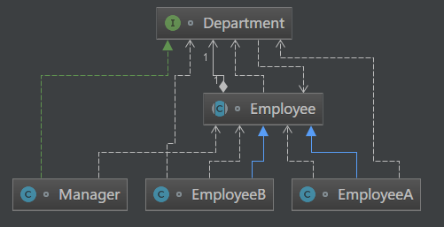
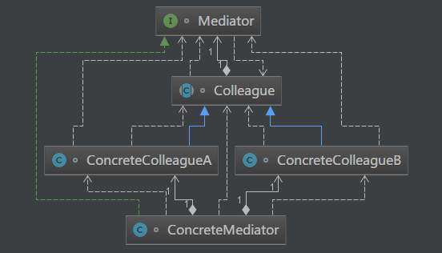
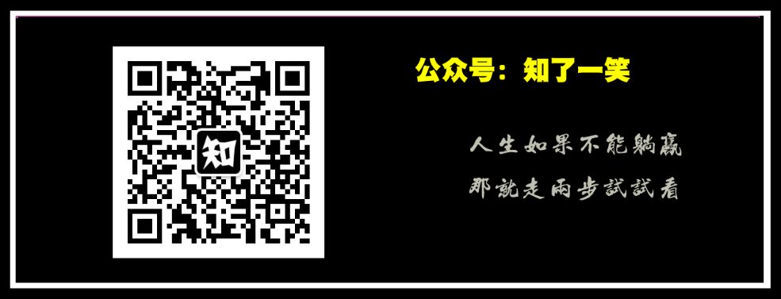

本文源码：GitHub·点这里 || GitEE·点这里
在公司的日常安排中，通常划分多个部门，每个部门又会分为不同的小组，部门经理的一项核心工作就是协调部门小组之间的工作，例如开发小组，产品小组，小组的需求统一汇总到经理，经理统一安排和协调。

public class C01_InScene {
public static void main(String[] args) {
Manager manager = new Manager() ;
EmployeeA employeeA = new EmployeeA("张三",manager) ;
EmployeeB employeeB = new EmployeeB("李四",manager) ;
employeeA.sendMsg(employeeA.name,"需要产品文档",employeeB);
}
}
/**
* 部门协调接口
*/
interface Department {
void coordinate (String userName,String msg,Employee employee) ;
}
/**
* 部门经理
*/
class Manager implements Department {
@Override
public void coordinate (String userName,String msg,Employee employee) {
System.out.println("经理接收【"+userName+"】的协调任务：" + msg);
System.out.println("经理转发【"+userName+"】协调任务,@【"+employee.name+"】");
employee.getMsg(userName,msg);
}
}
/**
* 员工抽象类
*/
abstract class Employee {
public String name ;
private Department department ;
public Employee (String name,Department department){
this.name = name ;
this.department = department ;
}
public void getMsg (String userName,String msg){
System.out.println("【"+this.name+"】收到"+"【"+userName+"】协调任务：["+msg+"]");
}
public void sendMsg (String name,String msg,Employee employee){
System.out.println("【"+name+"】发起协调任务："+ msg);
department.coordinate(name,msg,employee);
}
}
/**
* 具体员工
*/
class EmployeeA extends Employee {
public EmployeeA(String name, Department department) {
super(name, department);
}
}
class EmployeeB extends Employee {
public EmployeeB(String name, Department department) {
super(name, department);
}
}执行结果
【张三】发起协调任务：需要产品文档
经理接收【张三】的协调任务：需要产品文档
经理转发【张三】协调任务,@【李四】
【李四】收到【张三】协调任务：[需要产品文档]调停者模式是对象的行为模式。调停者模式包装了一系列对象相互作用的方式，使得这些对象不必相互显式引用，通过一个中介对象进行引用通知，从而对象之间解耦。当这些对象中的某些对象之间的相互作用发生改变时，不会立即影响到其他的对象间的相互作用。保证这些相互作用可以彼此独立地变化。

定义出同事对象到调停者对象的接口，其中主要方法是一个或多个事件方法。
实现了抽象调停者所声明的事件方法。具体调停者持有所有的具体同事类，并负责协调各具体同事对象的交互信息。
定义出调停者到同事对象的接口。同事对象只持有调停者而不知道具体的同事对象。
所有的具体同事类均从抽象同事类继承而来，需要与其他同事通信的时候，就与持有的调停者通信，调停者会负责与其他的同事对象交互。
/**
* 抽象调停者类
*/
interface Mediator {
void notify (Colleague colleague);
}
/**
* 抽象同事类
*/
abstract class Colleague {
/* 持有调停者对象 */
private Mediator mediator;
public Colleague(Mediator mediator){
this.mediator = mediator;
}
public Mediator getMediator(){
return mediator;
}
}
/**
* 具体调停者类
*/
class ConcreteMediator implements Mediator{
private ConcreteColleagueA colleagueA ;
private ConcreteColleagueB colleagueB ;
public void setColleagueA(ConcreteColleagueA colleagueA) {
this.colleagueA = colleagueA;
}
public void setColleagueB(ConcreteColleagueB colleagueB) {
this.colleagueB = colleagueB;
}
@Override
public void notify(Colleague colleague) {
System.out.println("协调通知消息");
}
}
/**
* 具体同事类
*/
class ConcreteColleagueA extends Colleague{
public ConcreteColleagueA(Mediator mediator) {
super(mediator);
}
public void operate(){
getMediator().notify(this);
}
}
class ConcreteColleagueB extends Colleague{
public ConcreteColleagueB(Mediator mediator) {
super(mediator);
}
public void operation(){
getMediator().notify(this);
}
}调停者模式通过把多个同事对象之间的交互封装到调停者对象里面，从而使得同事对象之间松散耦合。
多个同事对象的交互，被封装在调停者对象里面集中管理，使得这些交互行为发生变化的时候，只需要修改调停者对象就可以了。
没有使用调停者模式的时候，同事对象之间的关系通常是多对多的，引入调停者对象以后，调停者对象和同事对象的关系通常变成双向的一对多。
调停者模式的一个潜在缺点是，过度集中化，当同事对象很多，交互非常、复杂时，会导致调停者对象变得十分复杂，而且难于管理和维护。
GitHub·地址
https://github.com/cicadasmile/model-arithmetic-parent
GitEE·地址
https://gitee.com/cicadasmile/model-arithmetic-parent